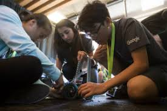
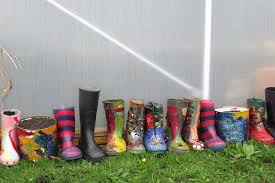

Sarswati Vishwa Vidyalay National School
Address- Saraswati Vishwa - Vidyalaya Gat no - 169, Ganesh Nagar Talawade Rd,Pune 412114
Phone number - 74474 97498 72760 09468
Email id- support@svvns-talawade.org
ClubCtivites,
>ARTS Club
>Dance Club
>Robotic Club
>Gardening Club
>Thetre Club

>Nature Club
>Litrature Club
>Science Club
>Music Club and etc.
My School Experience I think school experience is individual and for many reasons. Mine had good points, rough points and moments where I couldn’t function to even attend. They don’t have the same services that they do now as when I'am in school. Many people believe that school prepares you for life and your future. I always felt like school is a place to put kids but didn’t really prepare them for the realities of life.I'am active in sports and got good enough grades to play but I enjoy school. I always felt like I wanted to get out and experience life. I have not only been a public school student but a parent of a special needs child and an employee. My background gives me the ability to see the faculty, parent and student views as well as find a middle ground when trying to mediate concerns and problems.My concern about that type of placement would be not making the child feel marginalized or labeled and the negative consequences that can bring. However I do believe that they have benefits if the child needs them. I most difficult experience I had was dealing with being raped and telling no one while trying to still function.